小过静卦,恒邦股份-2023年的123月走势 by 金玉堂
时间: 2023-01-04
干支: 壬寅年壬子月壬戌日 (旬空: 子丑 )
小过静卦 (游魂)
白虎 ▅▅ ▅▅ 父母戌土
腾蛇 ▅▅ ▅▅ 兄弟申金
勾陈 子孙亥水▅▅▅▅▅ 官鬼午火 世
朱雀 ▅▅▅▅▅ 兄弟申金
青龙 妻财卯木▅▅ ▅▅ 官鬼午火
玄武 ▅▅ ▅▅ 父母辰土 应
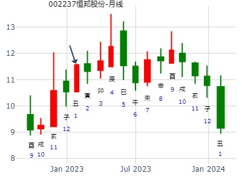
主帖标题: 从周易角度看大C浪的运行轨迹
先看长期卦
占事：测上证指数未来几年趋势何年见底(目前2700附近)
公历起卦时间：2016年2月11日13时18分 (手工指定)
干支：丙申年 庚寅月 癸亥日 己未时 （日空：子丑）
神煞：驿马－巳 桃花－子 日禄－子 贵人－卯，巳
兑宫：雷山小过 (游魂) 兑宫：雷山小过 (游魂)
六神 伏神 本 卦 变 卦
白虎 父母庚戌土 ▅▅ ▅▅ 父母庚戌土 ▅▅ ▅▅
腾蛇 兄弟庚申金 ▅▅ ▅▅ 兄弟庚申金 ▅▅ ▅▅
勾陈 子孙丁亥水 官鬼庚午火 ▅▅▅▅▅ 世 官鬼庚午火 ▅▅▅▅▅ 世
朱雀 兄弟丙申金 ▅▅▅▅▅ 兄弟丙申金 ▅▅▅▅▅
青龙 妻财丁卯木 官鬼丙午火 ▅▅ ▅▅ 官鬼丙午火 ▅▅ ▅▅
玄武 父母丙辰土 ▅▅ ▅▅ 应 父母丙辰土 ▅▅ ▅▅ 应
官持世,财子均伏,但月日寅亥合木,财旺可用.问的是未来几年趋势,总体先跌后涨.未来可涨到8000点.
本人在几年前就一直看空申酉年,此卦显示的也是如此!
再看丙申年(2016年)年卦
占事：测丙申年上证指数K线趋势及阶段反弹时间
公历起卦时间：2016年1月22日15时45分 (在线摇卦)
干支：乙未年 己丑月 癸卯日 庚申时 （日空：辰巳）
震宫：泽风大过 (游魂) 兑宫：雷山小过 (游魂)
白虎 妻财丁未土 ▅▅ ▅▅ 妻财庚戌土 ▅▅ ▅▅
腾蛇 官鬼丁酉金 ▅▅▅▅▅ ○→ 官鬼庚申金 ▅▅ ▅▅
勾陈 子孙庚午火 父母丁亥水 ▅▅▅▅▅ 世 子孙庚午火 ▅▅▅▅▅ 世
朱雀 官鬼辛酉金 ▅▅▅▅▅ 官鬼丙申金 ▅▅▅▅▅
青龙 兄弟庚寅木 父母辛亥水 ▅▅▅▅▅ ○→ 子孙丙午火 ▅▅ ▅▅
玄武 妻财辛丑土 ▅▅ ▅▅ 应 妻财丙辰土 ▅▅ ▅▅ 应
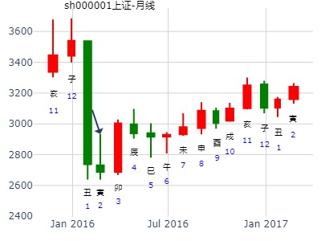
上卦财在卯，卯涨得多。下卦卯冲酉，卯涨得多。辰合酉涨不动。
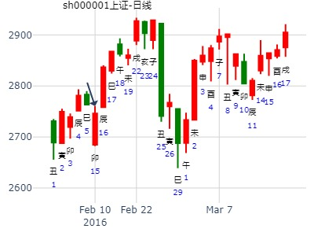
先看长期卦
性别：女 占事：测上证指数未来几年趋势何年见底(目前2700附近)
公历起卦时间：2016年2月11日13时18分 (手工指定)
干支：丙申年 庚寅月 癸亥日 己未时 （日空：子丑）
兑宫：雷山小过 (游魂) 兑宫：雷山小过 (游魂)
六神 伏神 本 卦 变 卦
白虎 父母庚戌土 ▅▅ ▅▅ 父母庚戌土 ▅▅ ▅▅
腾蛇 兄弟庚申金 ▅▅ ▅▅ 兄弟庚申金 ▅▅ ▅▅
勾陈 子孙丁亥水 官鬼庚午火 ▅▅▅▅▅ 世 官鬼庚午火 ▅▅▅▅▅ 世
朱雀 兄弟丙申金 ▅▅▅▅▅ 兄弟丙申金 ▅▅▅▅▅
青龙 妻财丁卯木 官鬼丙午火 ▅▅ ▅▅ 官鬼丙午火 ▅▅ ▅▅
玄武 父母丙辰土 ▅▅ ▅▅ 应 父母丙辰土 ▅▅ ▅▅ 应
风生水起 占事：岳阳兴长16.2.29-17.2.8 起卦方式：手动摇卦
公历时间：2016年2月29日8时39分
干 支：丙申年 庚寅月 辛巳日 壬辰时
旬 空：辰巳 午未 申酉 午未
兑宫：雷山小过（游魂）
六神 伏 神 【本 卦】
螣蛇 ▄▄ ▄▄ 父母庚戌土
勾陈 ▄▄ ▄▄ 兄弟庚申金
朱雀 子孙丁亥水 ▄▄▄▄▄ 官鬼庚午火 世
青龙 ▄▄▄▄▄ 兄弟丙申金
玄武 妻财丁卯木 ▄▄ ▄▄ 官鬼丙午火
白虎 ▄▄ ▄▄ 父母丙辰土 应
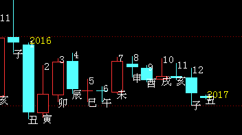
房产税哪年会实行？
公历起卦时间：2017年2月25日17时47分 (在线摇卦)
干支：丁酉年 壬寅月 癸未日 辛酉时 （日空：申酉）
兑宫：雷山小过 (游魂) 兑宫：雷山小过 (游魂)
六神 伏神 本 卦 变 卦
白虎 父母庚戌土 ▅▅ ▅▅ 父母庚戌土 ▅▅ ▅▅
腾蛇 兄弟庚申金 ▅▅ ▅▅ 兄弟庚申金 ▅▅ ▅▅
勾陈 子孙丁亥水 官鬼庚午火 ▅▅▅▅▅ 世 官鬼庚午火 ▅▅▅▅▅ 世
朱雀 兄弟丙申金 ▅▅▅▅▅ 兄弟丙申金 ▅▅▅▅▅
青龙 妻财丁卯木 官鬼丙午火 ▅▅ ▅▅ 官鬼丙午火 ▅▅ ▅▅
玄武 父母丙辰土 ▅▅ ▅▅ 应 父母丙辰土 ▅▅ ▅▅ 应
主帖标题: 六爻试测上证2020.2.17庚寅星期一-2.21哪日是顶？
男 占事：上证2020.2.17庚寅星期一-2.21日是顶z？
公历起卦时间：2020年2月15日15时58分 (电脑自动)
干支：庚子年 戊寅月 戊子日 庚申时 （日空：午未）
兑宫：雷山小过 (游魂) 兑宫：雷山小过 (游魂)
六神 伏神 本 卦 变 卦
朱雀 父母庚戌土 ▅▅ ▅▅ 父母庚戌土 ▅▅ ▅▅
青龙 兄弟庚申金 ▅▅ ▅▅ 兄弟庚申金 ▅▅ ▅▅
玄武 子孙丁亥水 官鬼庚午火 ▅▅▅▅▅ 世 官鬼庚午火 ▅▅▅▅▅ 世
白虎 兄弟丙申金 ▅▅▅▅▅ 兄弟丙申金 ▅▅▅▅▅
螣蛇 妻财丁卯木 官鬼丙午火 ▅▅ ▅▅ 官鬼丙午火 ▅▅ ▅▅
勾陈 父母丙辰土 ▅▅ ▅▅ 应 父母丙辰土 ▅▅ ▅▅ 应
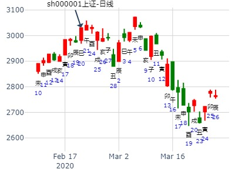
六爻试测上证庚子年哪月是顶？2020.2.5-2021.2.4约
男 占事：没填
公历起卦时间：2020年2月20日8时13分 (电脑自动)
干支：庚子年 戊寅月 癸巳日 丙辰时 （日空：午未）
兑宫：雷山小过 (游魂) 兑宫：雷山小过 (游魂)
六神 伏神 本 卦 变 卦
白虎 父母庚戌土 ▅▅ ▅▅ 父母庚戌土 ▅▅ ▅▅
螣蛇 兄弟庚申金 ▅▅ ▅▅ 兄弟庚申金 ▅▅ ▅▅
勾陈 子孙丁亥水 官鬼庚午火 ▅▅▅▅▅ 世 官鬼庚午火 ▅▅▅▅▅ 世
朱雀 兄弟丙申金 ▅▅▅▅▅ 兄弟丙申金 ▅▅▅▅▅
青龙 妻财丁卯木 官鬼丙午火 ▅▅ ▅▅ 官鬼丙午火 ▅▅ ▅▅
玄武 父母丙辰土 ▅▅ ▅▅ 应 父母丙辰土 ▅▅ ▅▅ 应
主帖标题: 六爻预测简批个股，费用：币、分随意！
出生：1979 年 性别：男 占事：测600133东湖高新在3.8-3.12走势
公历起卦时间：2010年3月6日14时21分 (手工指定)
干支：庚寅年 己卯月 乙卯日 癸未时 （日空：子丑）
神煞：驿马－巳 桃花－子 日禄－卯 贵人－子，申
兑宫：雷山小过 (游魂) 兑宫：雷山小过 (游魂)
六神 伏神 本 卦 变 卦
玄武 父母庚戌土 ▅▅ ▅▅ 父母庚戌土 ▅▅ ▅▅
白虎 兄弟庚申金 ▅▅ ▅▅ 兄弟庚申金 ▅▅ ▅▅
腾蛇 子孙丁亥水 官鬼庚午火 ▅▅▅▅▅ 世 官鬼庚午火 ▅▅▅▅▅ 世
勾陈 兄弟丙申金 ▅▅▅▅▅ 兄弟丙申金 ▅▅▅▅▅
朱雀 妻财丁卯木 官鬼丙午火 ▅▅ ▅▅ 官鬼丙午火 ▅▅ ▅▅
青龙 父母丙辰土 ▅▅ ▅▅ 应 父母丙辰土 ▅▅ ▅▅ 应
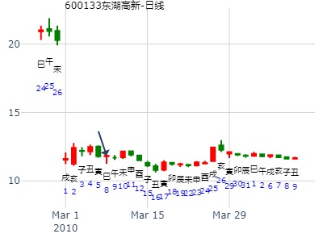
女 占事：创业板在下周的走势如何
公历起卦时间：2015年3月5日10时34分 (电脑自动)
干支：乙未年 戊寅月 庚辰日 辛巳时 （日空：申酉）
兑宫：雷山小过 (游魂) 兑宫：雷山小过 (游魂)
六神 伏神 本 卦 变 卦
腾蛇 父母庚戌土 ▅▅ ▅▅ 父母庚戌土 ▅▅ ▅▅
勾陈 兄弟庚申金 ▅▅ ▅▅ 兄弟庚申金 ▅▅ ▅▅
朱雀 子孙丁亥水 官鬼庚午火 ▅▅▅▅▅ 世 官鬼庚午火 ▅▅▅▅▅ 世
青龙 兄弟丙申金 ▅▅▅▅▅ 兄弟丙申金 ▅▅▅▅▅
玄武 妻财丁卯木 官鬼丙午火 ▅▅ ▅▅ 官鬼丙午火 ▅▅ ▅▅
白虎 父母丙辰土 ▅▅ ▅▅ 应 父母丙辰土 ▅▅ ▅▅ 应
卦虽小过，财爻值月，兄弟空。没忧。
16日卯出伏，大涨。
10日酉日冲卯暗动，涨。
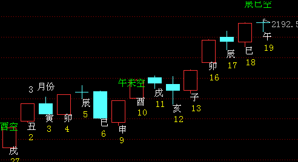
占事：600635未来二周？招财公主钱币卦
公历起卦时间：2015年3月11日10时0分 (钱币卦)
干支：乙未年 己卯月 丙戌日 癸巳时 （日空：午未）
兑宫：雷山小过 (游魂) 兑宫：雷山小过 (游魂)
六神 伏神 本 卦 变 卦
青龙 父母庚戌土 ▅▅ ▅▅ 父母庚戌土 ▅▅ ▅▅
玄武 兄弟庚申金 ▅▅ ▅▅ 兄弟庚申金 ▅▅ ▅▅
白虎 子孙丁亥水 官鬼庚午火 ▅▅▅▅▅ 世 官鬼庚午火 ▅▅▅▅▅ 世
腾蛇 兄弟丙申金 ▅▅▅▅▅ 兄弟丙申金 ▅▅▅▅▅
勾陈 妻财丁卯木 官鬼丙午火 ▅▅ ▅▅ 官鬼丙午火 ▅▅ ▅▅
朱雀 父母丙辰土 ▅▅ ▅▅ 应 父母丙辰土 ▅▅ ▅▅ 应
虽是小过卦，卦辞不好，但是财在卯值月旺。
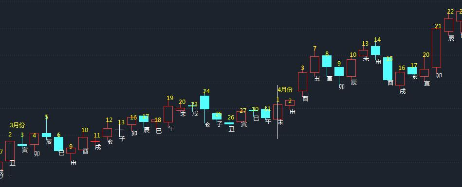
招财公主测601390未来2周走势
第1，2花 第2，2花 第3，1花 第4，1花 第5，2花 第6，2花
占事：中国中铁未来二周走势？
公历起卦时间：2015年3月19日19时45分 (在线摇卦)
干支：乙未年 己卯月 甲午日 甲戌时 （日空：辰巳）
兑宫：雷山小过 (游魂) 兑宫：雷山小过 (游魂)
六神 伏神 本 卦 变 卦
玄武 父母庚戌土 ▅▅ ▅▅ 父母庚戌土 ▅▅ ▅▅
白虎 兄弟庚申金 ▅▅ ▅▅ 兄弟庚申金 ▅▅ ▅▅
腾蛇 子孙丁亥水 官鬼庚午火 ▅▅▅▅▅ 世 官鬼庚午火 ▅▅▅▅▅ 世
勾陈 兄弟丙申金 ▅▅▅▅▅ 兄弟丙申金 ▅▅▅▅▅
朱雀 妻财丁卯木 官鬼丙午火 ▅▅ ▅▅ 官鬼丙午火 ▅▅ ▅▅
青龙 父母丙辰土 ▅▅ ▅▅ 应 父母丙辰土 ▅▅ ▅▅ 应
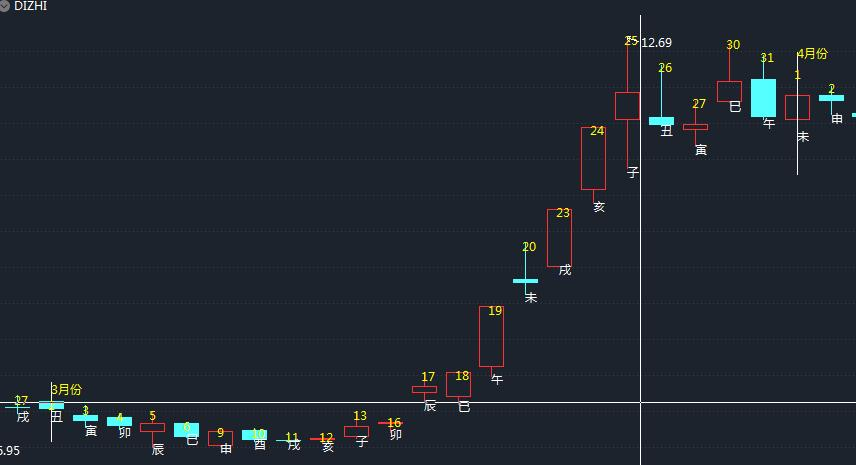
主帖标题: 试测上证2021.3.8收盘 个位数是几？
9 男 占事：没填
公历起卦时间：2021年3月6日10时43分 (电脑自动)
干支：辛丑年 辛卯月 癸丑日 丁巳时 （日空：寅卯）
兑宫：雷山小过 (游魂) 兑宫：雷山小过 (游魂)
六神 伏神 本 卦 变 卦
白虎 父母庚戌土 ▅▅ ▅▅ 父母庚戌土 ▅▅ ▅▅
螣蛇 兄弟庚申金 ▅▅ ▅▅ 兄弟庚申金 ▅▅ ▅▅
勾陈 子孙丁亥水 官鬼庚午火 ▅▅▅▅▅ 世 官鬼庚午火 ▅▅▅▅▅ 世
朱雀 兄弟丙申金 ▅▅▅▅▅ 兄弟丙申金 ▅▅▅▅▅
青龙 妻财丁卯木 官鬼丙午火 ▅▅ ▅▅ 官鬼丙午火 ▅▅ ▅▅
玄武 父母丙辰土 ▅▅ ▅▅ 应 父母丙辰土 ▅▅ ▅▅ 应
主帖标题: 巳月个股月卦收集帖
7，清净道人
出生：2022 年 性别：男 占事：60506X 5月
排卦：元亨利贞网六爻在线排盘系统 https://www.china95.net
公历起卦时间：2022年5月1日17时20分 (在线摇卦)
干支：壬寅年 甲辰月 甲寅日 癸酉时 （日空：子丑）
神煞：驿马－申 桃花－卯 日禄－寅 贵人－丑，未
兑宫：雷山小过 (游魂) 兑宫：雷山小过 (游魂)
六神 伏神 本 卦 变 卦
玄武 父母庚戌土 ▅▅ ▅▅ 父母庚戌土 ▅▅ ▅▅
白虎 兄弟庚申金 ▅▅ ▅▅ 兄弟庚申金 ▅▅ ▅▅
螣蛇 子孙丁亥水 官鬼庚午火 ▅▅▅▅▅ 世 官鬼庚午火 ▅▅▅▅▅ 世
勾陈 兄弟丙申金 ▅▅▅▅▅ 兄弟丙申金 ▅▅▅▅▅
朱雀 妻财丁卯木 官鬼丙午火 ▅▅ ▅▅ 官鬼丙午火 ▅▅ ▅▅
青龙 父母丙辰土 ▅▅ ▅▅ 应 父母丙辰土 ▅▅ ▅▅ 应
主帖标题: 上证 0516 涨跌
男 占事：没填
公历起卦时间：2022年5月14日18时9分 (在线摇卦)
干支：壬寅年 乙巳月 丁卯日 己酉时 （日空：戌亥）
兑宫：雷山小过 (游魂) 兑宫：雷山小过 (游魂)
六神 伏神 本 卦 变 卦
青龙 父母庚戌土 ▅▅ ▅▅ 父母庚戌土 ▅▅ ▅▅
玄武 兄弟庚申金 ▅▅ ▅▅ 兄弟庚申金 ▅▅ ▅▅
白虎 子孙丁亥水 官鬼庚午火 ▅▅▅▅▅ 世 官鬼庚午火 ▅▅▅▅▅ 世
螣蛇 兄弟丙申金 ▅▅▅▅▅ 兄弟丙申金 ▅▅▅▅▅
勾陈 妻财丁卯木 官鬼丙午火 ▅▅ ▅▅ 官鬼丙午火 ▅▅ ▅▅
朱雀 父母丙辰土 ▅▅ ▅▅ 应 父母丙辰土 ▅▅ ▅▅ 应
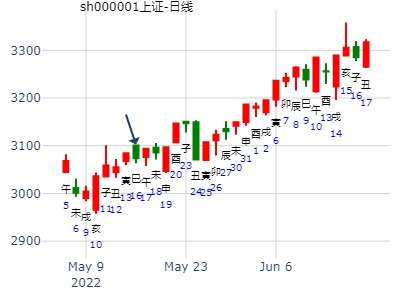
以下是引用sky999在2008-6-4 14:42:00的发言：2008年6月粕809走势？
占事：2008年6月粕809走势？ 起法：手动摇卦 国际易经网
公历：2008年6月4日14时35分 星期三
干支：戊子年 丁巳月 乙亥日 癸未时 (旬空：申酉)
小过静卦 (游魂)
玄武 ▅▅ ▅▅ 父母戌土
白虎 ▅▅ ▅▅ 兄弟申金
腾蛇 子孙亥水▅▅▅▅▅ 官鬼午火 世
勾陈 ▅▅▅▅▅ 兄弟申金
朱雀 妻财卯木▅▅ ▅▅ 官鬼午火
青龙 ▅▅ ▅▅ 父母辰土 应
主帖标题: 6月6日至6月10日大盘预测
公历时间：2022年6月4日18时42分
干 支：壬寅年 乙巳月 戊子日 辛酉时
旬 空：辰巳 寅卯 午未 子丑
兑宫：雷山小过（游魂）
六神 伏 神 【本 卦】
朱雀 ▄▄ ▄▄ 父母庚戌土
青龙 ▄▄ ▄▄ 兄弟庚申金
玄武 子孙丁亥水 ▄▄▄▄▄ 官鬼庚午火 世
白虎 ▄▄▄▄▄ 兄弟丙申金
螣蛇 妻财丁卯木 ▄▄ ▄▄ 官鬼丙午火
勾陈 ▄▄ ▄▄ 父母丙辰土 应
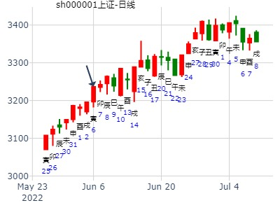
占问事宜：7月17日大盘涨跌
公历：2015年7月16日12时17分，星期四。
干支：乙未年 癸未月 癸巳日 戊午时 (卦身：卯)
主变卦 雷山小过(兑宫-游魂) [空亡:午、未]
白虎 ▅▅ ▅▅ 父母庚戌土
螣蛇 ▅▅ ▅▅ 兄弟庚申金
勾陈 子孙丁亥水 ▅▅▅▅▅ 官鬼庚午火 世
朱雀 ▅▅▅▅▅ 兄弟丙申金
青龙 妻财丁卯木 ▅▅ ▅▅ 官鬼丙午火
玄武 ▅▅ ▅▅ 父母丙辰土 应
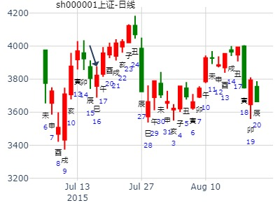
主帖标题: 2014年9月大盘涨跌卦
占事：2014年9月大盘涨跌？
公历起卦时间：2014年8月29日15时56分 (手工指定)
干支：甲午年 壬申月 壬申日 戊申时 （日空：戌亥）
兑宫：雷山小过 (游魂) 兑宫：雷山小过 (游魂)
六神 伏神 本 卦 变 卦
白虎 父母庚戌土 ▅▅ ▅▅ 父母庚戌土 ▅▅ ▅▅
腾蛇 兄弟庚申金 ▅▅ ▅▅ 兄弟庚申金 ▅▅ ▅▅
勾陈 子孙丁亥水官鬼庚午火 ▅▅▅▅▅ 世 官鬼庚午火 ▅▅▅▅▅ 世
朱雀 兄弟丙申金 ▅▅▅▅▅ 兄弟丙申金 ▅▅▅▅▅
青龙 妻财丁卯木官鬼丙午火 ▅▅ ▅▅ 官鬼丙午火 ▅▅ ▅▅
玄武 父母丙辰土 ▅▅ ▅▅ 应 父母丙辰土 ▅▅ ▅▅ 应
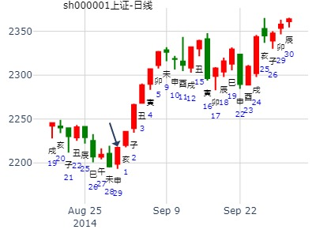
主帖标题: 2021年第36周 8月30至9月3日个股300491预测汇总
公历时间：2021年8月28日21时22分 农历时间：辛丑年 七月二十一日亥时
干 支：辛丑年 丙申月 戊申日 癸亥时
旬 空：辰巳 辰巳 寅卯 子丑
兑宫：雷山小过（游魂）
朱雀 ▄▄ ▄▄ 父母庚戌土
青龙 ▄▄ ▄▄ 兄弟庚申金
玄武 子孙丁亥水 ▄▄▄▄▄ 官鬼庚午火 世
白虎 ▄▄▄▄▄ 兄弟丙申金
螣蛇 妻财丁卯木 ▄▄ ▄▄ 官鬼丙午火
勾陈 ▄▄ ▄▄ 父母丙辰土 应
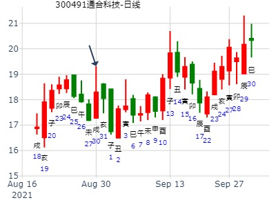
雷山小过静卦。股价或多方月破，风险大。雷山小过。涨完就跌。妻财月破伏于官鬼下
分析00903云内动力走势
公历：2000年9月14日 时间: 2000-09-14
干支: 庚辰年乙酉月乙亥日 (旬空: 申酉 )
兑：雷山小过(游魂)
六神 伏 神 【本 卦】
玄武 ▅▅ ▅▅ 父母戌土
白虎 ▅▅ ▅▅ 兄弟申金
螣蛇 子孙亥水 ▅▅▅▅▅ 官鬼午火 世
勾陈 ▅▅▅▅▅ 兄弟申金
朱雀 妻财卯木 ▅▅ ▅▅ 官鬼午火
青龙 ▅▅ ▅▅ 父母辰土 应
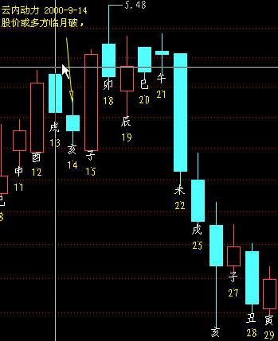
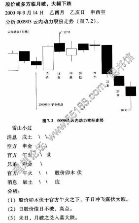
分析:
卯木伏于官方午火之下,子日冲飞露伏大涨.（注： 虽月破无碍）
卯日股价值日不破,高点.
未日,月破之爻入墓大跌.
(注： 未日还是飞神冲飞后合补的日子）
沐浴祷告，手摇乾隆币卦，求测9月1日、2日大盘上证指数走势：
占事：大盘9月1、2日
公历时间：2015年9月1日7时49分
干 支：乙未年 甲申月 庚辰日 庚辰时 旬 空：辰巳 午未 (申酉) 申酉
小过静卦 (游魂)
腾蛇 ▅▅ ▅▅ 父母戌土
勾陈 ▅▅ ▅▅ 兄弟申金
朱雀 子孙亥水▅▅▅▅▅ 官鬼午火 世
青龙 ▅▅▅▅▅ 兄弟申金
玄武 妻财卯木▅▅ ▅▅ 官鬼午火
白虎 ▅▅ ▅▅ 父母辰土 应
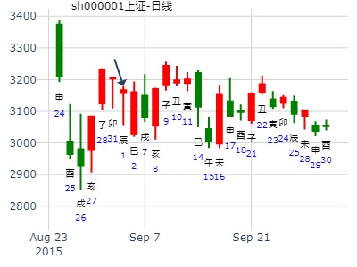
主帖标题: 前天尾盘入手股今天能获利出局吗？？？？
姓名： 出生年:1981 性别：男 占事：起卦方式：手动摇卦CHN预测网六爻排
公历时间：2019年9月12日7时20分 农历时间：己亥年 八月十四日辰时
干 支：己亥年 癸酉月 壬子日 甲辰时
旬 空：辰巳 戌亥 寅卯 寅卯
兑宫：雷山小过（游魂）
六神 伏 神 【本 卦】
白虎 ▄▄ ▄▄ 父母庚戌土
螣蛇 ▄▄ ▄▄ 兄弟庚申金
勾陈 子孙丁亥水 ▄▄▄▄▄ 官鬼庚午火 世
朱雀 ▄▄▄▄▄ 兄弟丙申金
青龙 妻财丁卯木 ▄▄ ▄▄ 官鬼丙午火
玄武 ▄▄ ▄▄ 父母丙辰土 应
再人
上证指数10月20-24日行情预测？
起卦时间：2014年10月19日10时10分 起卦方式：手摇硬币起卦
干支：甲午年 甲戌月 癸亥日 丁巳时
旬空：辰巳 申酉 子丑 子丑
六神 伏神 兑宫：雷山小过（游魂）
【本 卦】
白虎 ▅▅ ▅▅ 父母庚戌土
滕蛇 ▅▅ ▅▅ 兄弟庚申金
勾陈 子孙丁亥水 ▅▅▅▅▅ 官鬼庚午火 世
朱雀 ▅▅▅▅▅ 兄弟丙申金
青龙 妻财丁卯木 ▅▅ ▅▅ 官鬼丙午火
玄武 ▅▅ ▅▅ 父母丙辰土 应
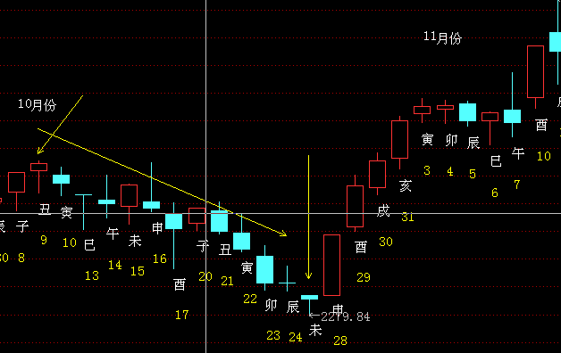
主帖标题: 本周沪市大盘
公历起卦时间：2022年10月10日14时55分 (在线摇卦)
干支：壬寅年 庚戌月 丙申日 乙未时 （日空：辰巳）
兑宫：雷山小过 (游魂)
六神 伏神 本 卦
青龙 父母庚戌土 ▅▅ ▅▅
玄武 兄弟庚申金 ▅▅ ▅▅
白虎 子孙丁亥水 官鬼庚午火 ▅▅▅▅▅ 世
螣蛇 兄弟丙申金 ▅▅▅▅▅
勾陈 妻财丁卯木 官鬼丙午火 ▅▅ ▅▅
朱雀 父母丙辰土 ▅▅ ▅▅ 应
本周10-14日沪市大盘。
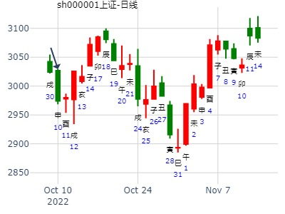
主帖标题: 第十八期上证指数预测比赛24日到28日
公历时间：2008年11月22日0时6分 星期六
干支：戊子年 癸亥月 丙寅日 戊子时 (旬空：戌亥)
这是摇卦的信息!
小过静卦 (游魂)
青龙 ▅▅ ▅▅ 父母戌土
玄武 ▅▅ ▅▅ 兄弟申金
白虎 子孙亥水▅▅▅▅▅ 官鬼午火 世
腾蛇 ▅▅▅▅▅ 兄弟申金
勾陈 妻财卯木▅▅ ▅▅ 官鬼午火
朱雀 ▅▅ ▅▅ 父母辰土 应
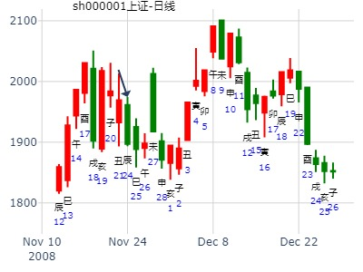